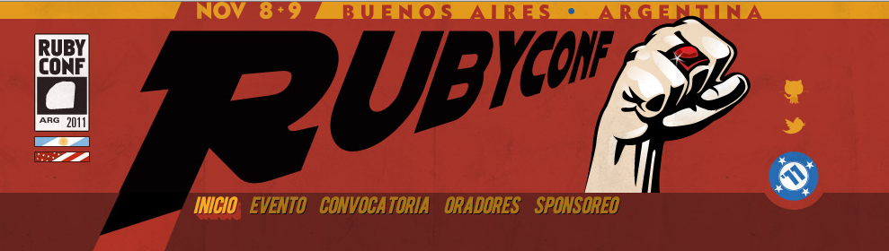

Introducción
a Ruby
Ruby Argentina Asociación Civil
4 de Octubre de 2011
¿Quiénes somos?
Ruby Argentina
Asociación Civil
ルビ (Ruby)

Preguntas
- ¿Quienes ya usaron Ruby?
- ¿Quienes escucharon hablar de Rails?
- ¿Usan Java?
- ¿Usan .NET?
- ¿Usan PHP?
Agenda
- Características de Ruby
- Instalar Ruby
- Ruby Ecosystem
- Web Frameworks
- Ejemplos
- Recursos
- Eventos locales
Características de Ruby
Ruby is designed for programmer happiness
Multiplataforma
- Linux
- Mac OS
- Windows
Múltiples implementaciones
- MRI: C
- JRuby: Java
- IronRuby: .NET
- Rubinius: Ruby
Interpretado
Dinámico
value = 42 puts value # => 42 value = "Hello, UNLaM!" puts value # => Hello, UNLaM! puts "hola".capitalize # => "Hola"
Orientado a Objetos
En Ruby todo es un objeto
>> "fnoCybuR".reverse
=> "RubyConf"
a = ""
4.times { |i| a+= i.to_s }
puts a
=> 0123
Pasaje de parámetros por nombre
Curso.find(:conditions => {:dia => Date.today }, :order => "id asc" )
Interacciones ágiles con bases de datos (SQL-Free)
University.find_by_name("UNLaM")
Open source + Monkey Patching
Código fuente de Ruby: https://github.com/ruby/ruby
class String
def greet
"Hola #{self}!"
end
end
>> "UNLaM".greet
=> "Hola UNLaM!"
Introspección
class Person
attr_accessor :name, :age
end
Person.instance_methods
# => "[:instance_eval, :pretty_inspect, :enum_for, :public_methods..."
Person.instance_methods.grep(/^to_/).sort.reverse
# => "[:to_yaml_properties, :to_yaml, :to_s, :to_enum]"
Person.instance_methods false
# => [:name, :name=, :age, :age=]
Es muy expresivo
10.times do
puts "u "
end
puts "Hello, UNLaM!" if Time.now.tuesday?
Person.delete_all!
(1..5).each do |i|
puts "El cuadrado de #{i} es #{i * i}"
end
1_000_000.times do
# This is going to take a while
end
Closure
user = "Foo Bar" 10.times do puts user end # Donde *user* es una variable que fue creada # fuera del bloque y el bloque puede acceder a ella
vec = [] (0..7).each do |n| vec << n end # vec => [0, 1, 2, 3, 4, 5, 6, 7]
Lambda
reverse_string_order = lambda { |x, y| y <=> x }
[1, 20, 3].sort &reverse_string_order
# => [20, 3, 1]
square = lambda { |n| n * n }
[1, 2, 3, 4, 5].map &square
# => [1, 4, 9, 16, 25]
Instalar Ruby
Ruby.install!
- Mac OS: Ya viene instalado
- Linux: Ya instalado, o "apt-get install ruby irb ...."
- Windows: rubyinstaller.org o railsinstaller.org
Ruby.installed?
conf$ ruby -v => ruby 1.9.....
Interactive Ruby
conf$ irb "hola mundo".split => ["hola", "mundo"]
Probar Ruby online
http://tryruby.org
TryRuby.org
Ruby Ecosystem
Ruby Version Management
- rvm (Mac/Linux)
- pik (Windows)
Rake: Ruby Make
# Rakefile task :default => [:test] desc "Run unit tests" task :test do ruby "test/unittest.rb" end # Bash rake test
RubyGems: Distribución de paquetes
Librerías, o "gemas" de todo tipo
Sistema de repositorios símil Debian/Ubuntu
# Bash gem install 'twitter'
RubyGems: Ejemplo @Twitter
# irb
> require 'twitter'
=> true
> Twitter.user_timeline("inkel").first.text
=> "cerrando detalles de la charla de #Ruby para la UNLaM"
Gems Más Usados
- Sass
- Capistrano
- Haml
- Capybara
- Cucumber
- Rails
Git
SCM (Como SVN, CVS pero mejor!)
Proyectos en Git: Linux, Debian, Eclipse

GitHub
Social Coding (Open Source Fun!)
Proyectos en GitHub: jQuery, Symfony, DJAngo, Linux Kernel
Desktop Frameworks
- Shoes
- FX Ruby
- Ruby QT
Web Frameworks
Objetivo principal: Más productividad

Ruby on Rails
Algunos features
- MVC (Model - View - Controller)
- "Convention Over Configuration"
- "Don’t Repeat Yourself" (DRY)
- ORM -> ActiveRecord
- Database Migrations
- Generadores
Ejemplos de empresas que usan Rails
- Basecamp
- Github
- Groupon
- Shopify
- Yellow Pages
Sinatra
Sinatra
Minimalista. Simple.
require 'sinatra' get '/hi' do "Hello World!" end
Otros Frameworks
- Cuba
- Padrino
- Otros más... (Sobre Rack)
Recursos
- tryruby.org
- ruby-lang.org/es/ -> "Ruby en 20 minutos"
- Lista rubysur@googlegroups.com
- ruby.com.ar - @rubyargentina
- Rails for Zombies -> http://railsforzombies.org
Eventos locales
Meetups (Mensuales)
Se anuncian en www.ruby.com.ar
RubyConf Argentina 2011
RubyConf Argentina 2011
8 y 9 de Noviembre - Ciudad Cultural Konex
Parte del "Tour Ruby Sur"

6 de Noviembre - Ruby Fun Day
Speakers
- Shugo Maeda
- Aaron Patterson
- Konstantin Haase
- Scott Chacon
- Tom Preston-Werner
- Luis Lavena
Y muchos más...
http://rubyconfargentina.org
@rubyconfar
Ruby Argentina Asociación Civil
- Martín Aceto (@maceto)
- Ernesto Tagwerker (@_nesto)
- Leandro López (@inkel)
- Matías Owsianik (@matiasow)
- Sebastián Rabuini (@sebasr)
- Michel Martens (@soveran)
- Lucas Florio (@lucasefe)
- Chad DePue (@chaddepue)
- Tom Henrik Aadland (@tomhenrik)
- Nicolás Cerrini (@ceneon)